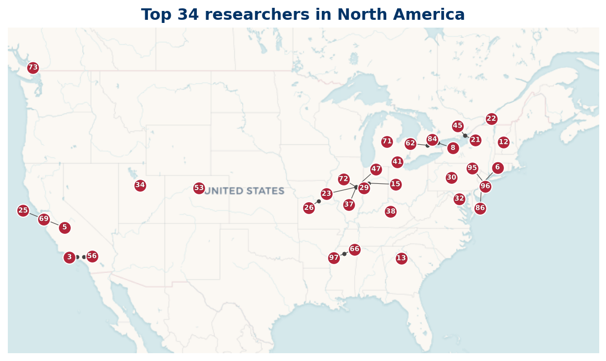

36 researchers are based in North America; 35 researchers mapped, 1 researcher location not available (institution geocode pending).
Listing
| Rank | Name | Institution | Country |
|---|---|---|---|
| 2 | D. A. Goldston | San Jose State University | US |
| 5 | Terence Tao | University of California, Los Angeles | US |
| 7 | Jared Duker Lichtman | Stanford University | US |
| 14 | Henryk Iwaniec | Rutgers University | US |
| 15 | Kevin Ford | University of Illinois Urbana-Champaign | US |
| 16 | John B. Friedlander | University of Toronto | CA |
| 17 | M. Ram Murty | Queen's University | CA |
| 18 | Paul Pollack | University of Georgia | US |
| 20 | Carl Pomerance | Dartmouth College | US |
| 25 | Peter D. T. A. Elliott | University of Colorado Boulder | US |
| 26 | Trevor D. Wooley | Purdue University West Lafayette | US |
| 27 | Runbo Li | University of Michigan | US |
| 28 | William D. Banks | University of Missouri | US |
| 30 | Tsz Ho Chan | Kennesaw State University | US |
| 31 | R. C. Vaughan | Pennsylvania State University | US |
| 33 | Vivian Kuperberg | Université de Montréal | CA |
| 35 | Will Sawin | Princeton University | US |
| 41 | Robert J. Lemke Oliver | Tufts University | US |
| 44 | K. Soundararajan | Stanford University | US |
| 47 | Tristan Freiberg | University of Waterloo | CA |
| 49 | Andrew Granville | Université de Montréal | CA |
| 50 | Frank Morales | Machine Science | US |
| 55 | Harold G. Diamond | University of Illinois Urbana-Champaign | US |
| 57 | Roger C. Baker | Brigham Young University | US |
| 61 | Ayla Gafni | University of Mississippi | US |
| 63 | Imre Kátai | Université Laval | CA |
| 65 | Alexandru Zaharescu | University of Illinois Urbana-Champaign | US |
| 66 | Jonathan Sorenson | Butler University | US |
| 70 | Frank Vega | Clinical Pharmacology of Miami | US |
| 71 | H. J. Weber | University of Virginia | US |
| 77 | Angel Kumchev | Towson University | US |
| 84 | Hugh Lowell Montgomery | University of Michigan | US |
| 87 | Alex Kontorovich | Rutgers, The State University of New Jersey | US |
| 90 | David Lowry-Duda | Brown University | US |
| 97 | Xuancheng Shao | University of Kentucky | US |
| 100 | Adolf Hildebrand | University of Illinois Urbana-Champaign | US |